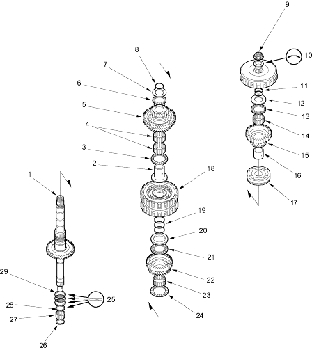

 |
- MAINSHAFT
- 4TH GEAR COLLAR
- THRUST NEEDLE BEARING
- NEEDLE BEARING
- 4TH GEAR
- THRUST NEEDLE BEARING
- THRUST WASHER
- SNAP RING
- LOCKNUT (FLANGE NUT)
21 x 1.25 mm, 79 Nm (8.0 kgf/m, 58 lbf/ft)
Replace.
Left-hand threads.
- CONICAL SPRING WASHER, Replace.
- O-RINGS, Replace.
- THRUST WASHER
- THRUST NEEDLE BEARING
- NEEDLE BEARING
- 1ST GEAR
- 1ST GEAR COLLAR
- TRANSMISSION HOUSING BEARING
- 2ND/4TH CLUTCH
- O-RING, Replace
- THRUST WASHER
36.5 x 55 mm
Selective part.
- THRUST NEEDLE BEARING
- 2ND GEAR
- NEEDLE BEARING
- THRUST NEEDLE BEARING
- Install sealing ring mating surface as shown.
- SET RING
- NEEDLE BEARING
- SEALING RING, 29 mm
- SEALING RINGS, 35 mm
|